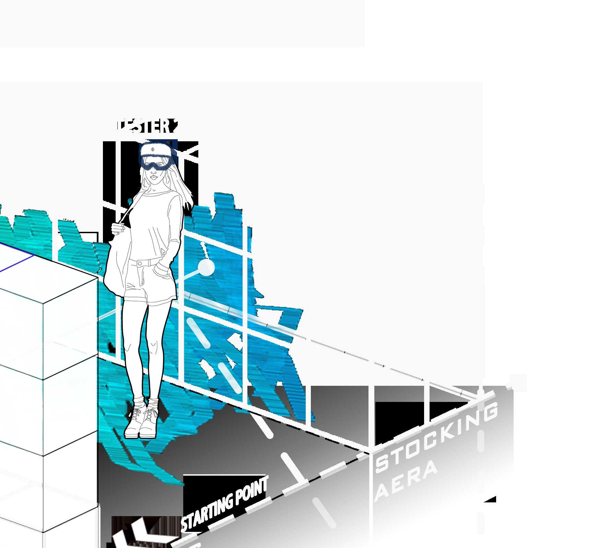
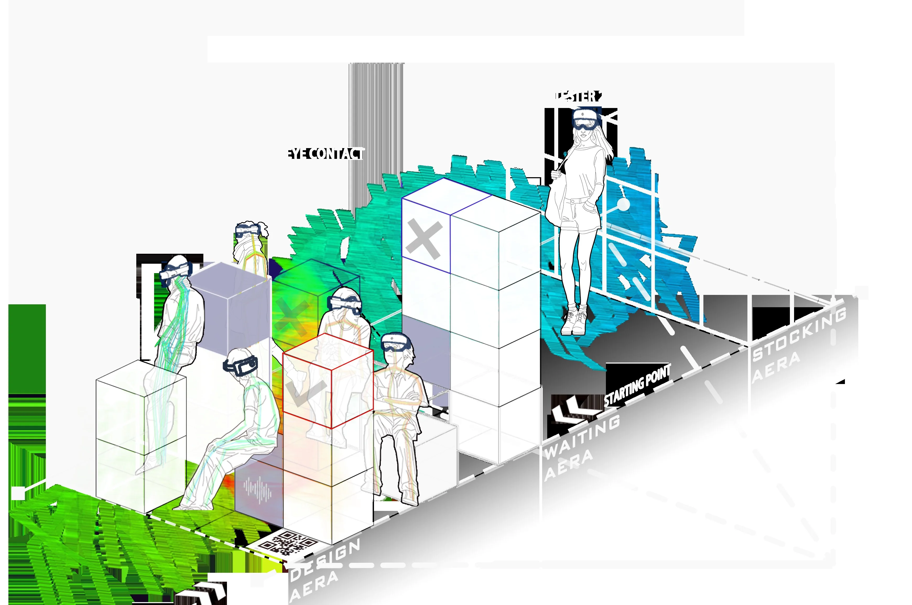

CASE 04
｜ Other Work
软件之前，我先做过空间
建筑 / 交互装置 / 概念设计
概念转译 · 真实建造 · 渲染与图纸
eVolo · 摩天楼竞赛
Floating Elysium
悬浮城市概念 · 概念设计
交互装置 · 渲染

DF · 空间交互实验
起点场景 · 观演与停留
交互装置 · 轴测

DF · 流线与分区
路径推演 · 空间叙事
Other Work · 建筑作品相册
团队项目标注本人负责部分 · 图纸详备索 ｜ 更多建筑作品陆续补充